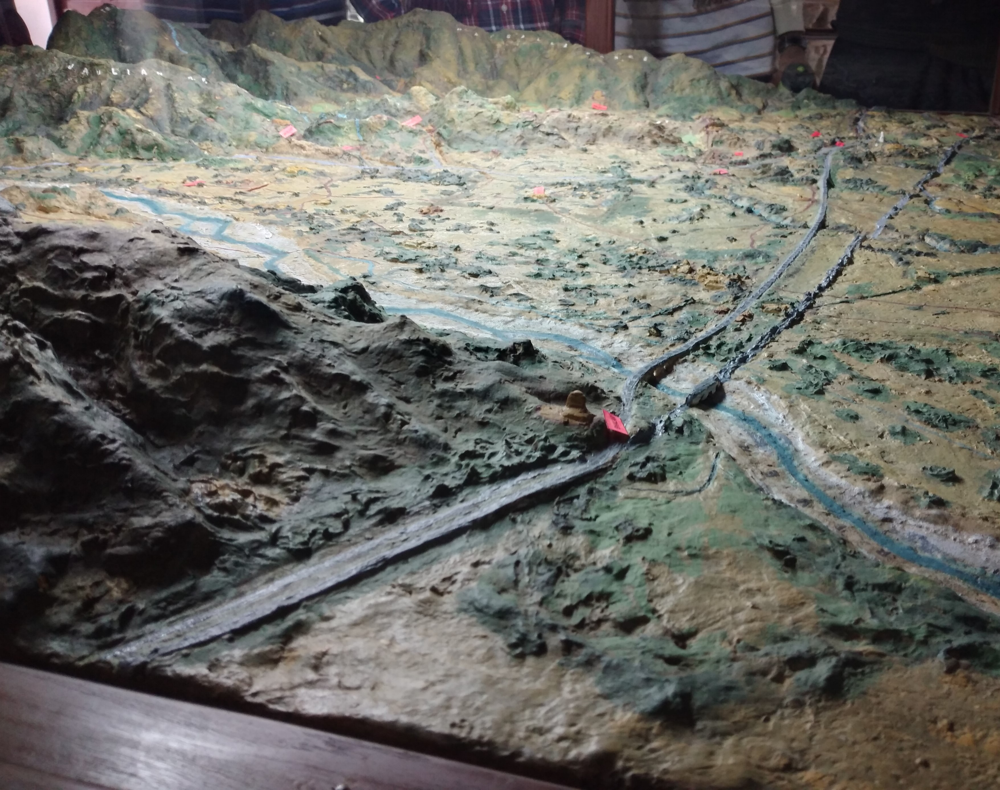
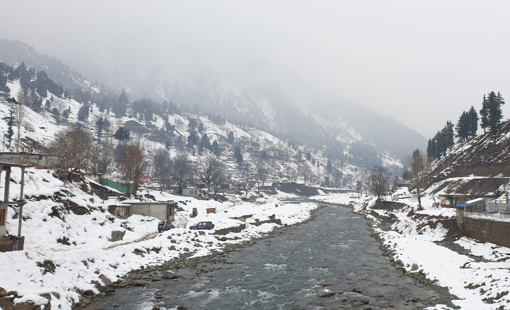
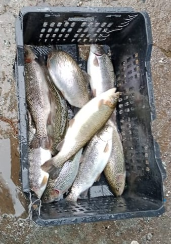
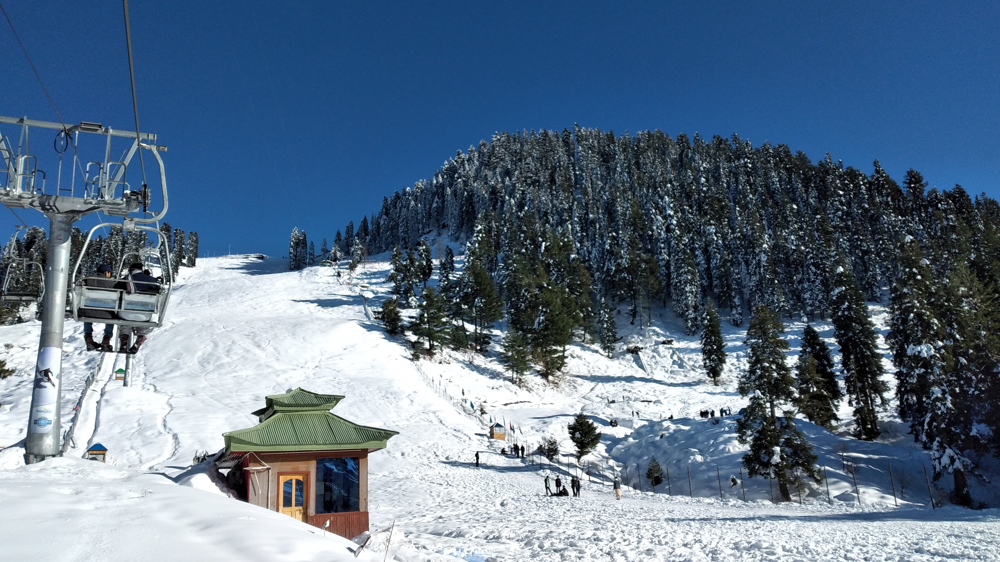

Swat is the beauty of Pakistan and it is also known as the Switzerland of Pakistan . Swat is situated in the province of Khyber Pakhtunkhwa .Swat is an amazing and tremendous place to visit .It is to be found fully covered by snow in the winters and full of appealing greenery is there in the summers. We visited Swat in the winter and it was as we expected or far more .The weather there was very cold and freezing. We visited a few places in and nearby Swat as well.
We went to a museum named Taxila Museum . It had ancient history prescribed on the carvings and there were sculptures of 'Budha' and had remains which were quiet unique and ancient as they were from around 100 a.d. We discovered a lot from that museum, we found a lot about the culture of the Budhists and we got to know that this place was vey sacred for the budhists just as Ka'aba is to us.
We went to a stunning valley known as Kalam. The white sheets of snow covered over the valley made it look breathtaking. The river flowing by had chilled water which made our hands freeze .The temperature there was frosting. We enjoyed snowfall as it snowed heavily and it all looked intimidating. The weather after that was sub zero even at day time.
We then went for fishing and got to know a lot about this spectacular fish named trout fish. Trout fish is a famous fish in the province of Punjab. A fact about this fish is that is swims against current. This fish is very powerful and has a lot of strength within itself.

The ski resort of Malam Jabba was from where we did the tube slide and skied. It was amusing and enjoyable.
We then sat on the chairlift at Malam Jabba. It took 10 minutes to go from one spot to another up the steep cliff and the weather up there was chilly but the view over the mountains was magnificent. One could sit up there and admire the astonishing and spectacular spectacle all day long. But unfortunately we had to return back.

This view is from the top of ski resort. The whole of Malam jabba can be viewed from here. Malam jabba was the perfect spot one could've imagined .Malam jabba was very fun and exciting to visit as it had a lot to do there.